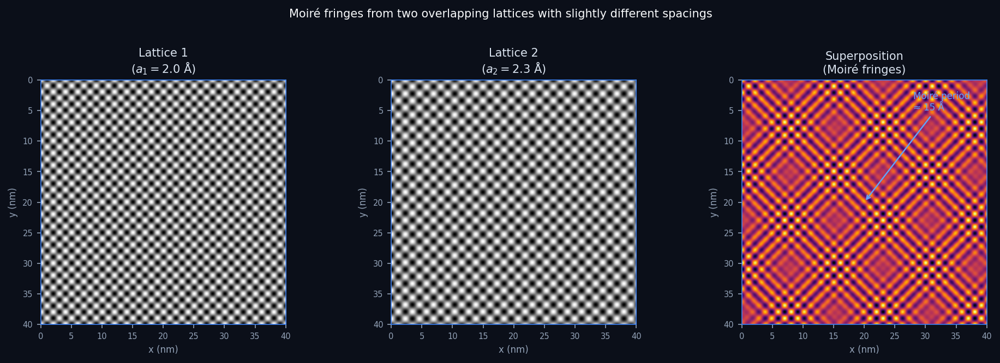
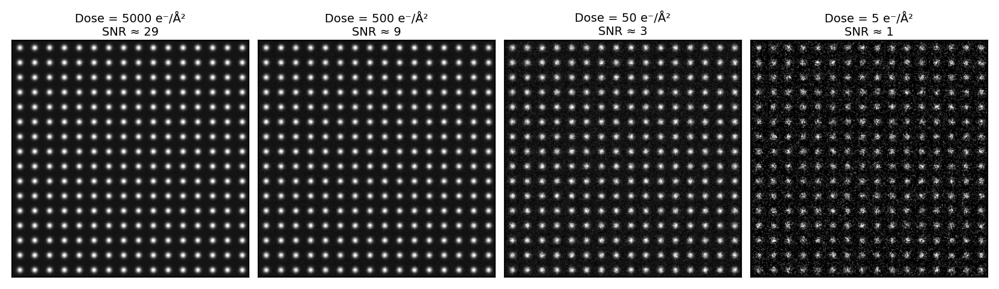

Data Science for Electron Microscopy
Week 2: What is learning? EM data & where noise comes from
Prof. Dr. Philipp Pelz
FAU Erlangen-Nürnberg
Institute of Micro- and Nanostructure Research


Recap: where we left off
- Week 1: Python + NumPy crash course, PSPP/CRISP-DM frameworks, EM modality overview.
- You can now load an EM image as a NumPy array, slice an ROI, and visualise it.
- The Poisson noise in last week’s simulated STEM image was not arbitrary — it is the correct physical model.
- Today we answer two questions: What does it mean for a machine to learn? And why is every pixel in an EM detector noisy?
Today’s question
- What is learning? Fitting a model to data — but fitting what exactly? And how do you know it worked?
- Where does EM noise come from? Electrons arrive one at a time; every pixel is a count; counts fluctuate — fundamentally, unavoidably.
- Why does it matter for data science? Your noise model determines which loss function is correct. The wrong choice silently degrades every trained model on EM data.
- Road map: learning taxonomy → model taxonomy → EM data zoo → sensors & sampling → aliasing → noise models → uncertainty → trust.
What is learning? Data analysis vs machine learning
- Classical data analysis: you write down the rules (equations, thresholds) and the computer applies them.
- Machine learning: you supply examples (data) and the computer infers the rules.
- In both cases the goal is the same: extract information from measurements.
- The difference is who specifies the function — the human or the optimiser.
Models: all are wrong, some are useful
- A model is a purposeful abstraction of reality built for prediction or explanation Neuer, Michael et al., (2024).
- First-principles models: derived from physical laws; interpretable; may fail when assumptions break down.
- Data-based models: inferred from observations; flexible; performance depends on data quality and coverage.
- George Box’s maxim: “All models are wrong, but some are useful.” — usefulness is judged at the decision point, not by aesthetics.
When first principles are not enough
- Complex systems can be nonlinear, high-dimensional, and partially observed.
- Example: Electron beam scattering in a thick sample — exact multi-slice simulation exists but is too slow for real-time analysis of millions of diffraction patterns.
- Hybrid strategy: keep trusted physics as structure; learn the residual or unknown coupling from data.
- Result: physically consistent outputs with data-efficient learning.
Three types of learning
Supervised
- Learn from labelled examples \((\mathbf{x}_i, y_i)\).
- Task: predict \(y\) from new \(\mathbf{x}\).
- Regression (continuous) or classification (discrete).
- Example: predict phase label from diffraction pattern.
Unsupervised
- Learn from unlabelled data \(\{\mathbf{x}_i\}\).
- Task: find hidden structure — clusters, manifolds, compact representations.
- Example: cluster EELS spectra into chemical phases without manual annotation.
Self-supervised
- Generate labels from the data itself — no human annotation.
- Task: predict one part of the input from another.
- Example: Noise2Noise denoising — predict one noisy version from another.
Supervised learning: regression vs classification
- Regression: predict a continuous target \(y \in \mathbb{R}\).
- Example: predict the local strain value from a 4D-STEM diffraction pattern.
- Loss: MSE (Gaussian noise) or Poisson NLL (Poisson noise).
- Classification: predict a discrete class label \(y \in \{1,\ldots,K\}\).
- Example: classify each EELS spectrum as oxide, metal, or carbide.
- Loss: cross-entropy.
- In EM, many tasks are neither cleanly one nor the other — strain maps are continuous, phase maps are discrete. Think carefully about the output type before choosing a loss.
Unsupervised learning: clustering and structure discovery
- Goal: find compact representations or groupings of unlabelled data.
- Clustering: partition data into groups by similarity — K-means, DBSCAN.
- Dimensionality reduction: project high-dimensional data to a low-dimensional space — PCA (Week 3), autoencoders (Week 8), t-SNE.
- EM example: a 4D-STEM scan of a polycrystalline alloy produces thousands of diffraction patterns. K-means clustering on PCA-compressed patterns automatically segments the image into grains of different orientation.
- No labels needed — the structure is discovered from the geometry of the data.
Self-supervised learning: the Noise2Noise principle
- Idea: use the data itself to generate supervision signals — no human labels.
- Noise2Noise: train a denoising network using pairs of noisy images of the same scene. The network learns to predict one noisy image from another — and the expectation of Poisson noise is the clean signal.
- Why it works for EM: at the same dose, two independently acquired STEM images have the same signal but independent Poisson noise realisations.
- Result: denoising performance comparable to supervised training against a clean reference image.
The supervised learning recipe
- Collect labelled examples: \((\mathbf{x}_i, y_i)\) for \(i = 1, \ldots, N\) — features and targets.
- Choose a model class \(f_\theta\): linear, polynomial, neural network, …
- Define a loss function \(\ell(f_\theta(\mathbf{x}), y)\): MSE, cross-entropy, Poisson NLL.
- Minimise the average loss over the training set (empirical risk minimisation).
- Evaluate on held-out data — never use the test set during training.
- Deploy, monitor, retrain as data distribution shifts.
This is CRISP-DM phases 3–6, mapped onto ML terminology.
Bias–variance trade-off: the central tension
- Bias: systematic error from overly simple assumptions — model misses real patterns.
- Variance: sensitivity to sampling noise — model memorises training quirks.
- Underfitting (high bias): too simple; straight-line fit to a curve.
- Overfitting (high variance): too complex; degree-50 polynomial fits noise.
- The “sweet spot” minimises the sum of both.
- EM analogy: fitting an EELS edge profile — a line is high-bias; a free polynomial is high-variance; a physically-motivated Hartree–Fock profile is the sweet spot.
- Regularisation, more training data, and physics priors all push toward the sweet spot.
- Core message: complexity is not free — it trades bias for variance.
Model taxonomy: white / grey / black-box
- White-box: explicit mechanism, interpretable parameters (physical laws, linear regression).
- Black-box: high predictive flexibility, no traceable internal mechanism (deep neural networks).
- Grey-box: partially traceable; blends physics structure with learned components (physics-informed neural networks, PINNs) Neuer, Michael et al., (2024).
- Explainability tools can move a black-box toward the grey zone — but never all the way to white.
- White: Bragg’s law, Beer–Lambert law, Schrödinger equation.
- Grey: learned hardening law in crystal-plasticity simulation.
- Black: CNN classifying phase from HAADF image.
Why black-box criticism is not just philosophy
- Safety, traceability, and auditability requirements in engineering and science.
- Difficulty diagnosing failure causes without interpretable intermediate representations.
- EM example: a CNN classifies crystal phases with 97% accuracy but cannot explain why it rejected a pattern — which means you cannot tell whether it learned lattice geometry or a detector artefact.
- Good practice: validate that the model has learned the right features, not just achieved the right score.
The EM data zoo: four modalities
- HAADF-STEM image: intensity ∝ Z^1.6–1.9; 2-D array shape
(ny, nx). Heavy atoms bright. - 4D-STEM: a 2-D diffraction pattern at every probe position → 4-D tensor
(ny, nx, ky, kx). - EELS / EDS spectrum image: energy spectrum at every pixel → 3-D tensor
(ny, nx, E). - Tilt-series tomography: N projections at different tilt angles → 3-D array
(n_tilt, ny, nx). - Each modality has its own noise model, sampling constraints, and ML architecture family.
HAADF-STEM: what the image encodes

- Probe scans in a raster; at each position the transmitted beam is detected.
- HAADF (High Angle Annular Dark Field): collects high-angle scattered electrons; signal ∝ Z^~1.7 (often quoted as Z² in the high-angle Rutherford limit).
- Result: a 2-D map of projected atomic-column density — heavier atoms appear bright.
- Each pixel = one dwell time × electron current = a count of scattered electrons.
4D-STEM, EELS, and tomography
- 4D-STEM: each probe position yields a full diffraction pattern. Maps strain, electric fields, magnetic fields, and phase — all from one scan. Shape
(ny, nx, ky, kx). - EELS spectrum image: magnetic prism disperses inelastically scattered electrons by energy loss. Maps chemical bonding at nanometre resolution. Shape
(ny, nx, E). - EDS spectrum image: characteristic X-rays from each pixel. Maps elemental composition. Shape
(ny, nx, E). - Tilt-series tomography: project the object from many angles; reconstruct a 3-D volume. Shape
(n_tilt, ny, nx)before reconstruction.
From physical signal to digital number
- Physical interaction: electrons scatter off the sample; scattered electrons hit the detector.
- Transduction: the detector converts particle arrivals into an electrical signal (charge, voltage).
- Digitisation: an ADC samples the analog signal at discrete times and quantises to integer values.
- Every step introduces noise and constraints: shot noise (quantum), read noise (electronic), quantisation (ADC resolution).
- The digital number is never “the truth” — it is one realisation of a random variable drawn from a physics-determined distribution.
Sampling: Nyquist–Shannon theorem
- A signal containing only frequencies up to \(f_\text{max}\) can be perfectly reconstructed from samples taken at rate \(f_s \geq 2 f_\text{max}\).
- Nyquist frequency: \(f_\text{Nyq} = f_s / 2\) — the highest frequency the system can faithfully capture.
- In an image: pixel pitch \(\Delta x\) sets \(f_s = 1/\Delta x\); structural features of size \(d\) need \(\Delta x \leq d/2\).
- Key caveat: this assumes perfect band-limiting before sampling (anti-aliasing filter). Without it, high-frequency content folds into the recorded band.
- Practical rule: sample at 3–5× the maximum frequency of interest, not the bare minimum.
- In atomic-resolution STEM: lattice spacing \(a\) → pixel pitch ≤ \(a/4\) is standard.
- Undersampling = aliasing (next slide).
Aliasing and Moiré fringes in TEM

- When the camera pixel pitch is too coarse to resolve the crystal lattice, lattice reflections alias into the image.
- The alias appears as spurious long-wavelength Moiré fringes — not real structure.
- Same artefact from two overlapping crystals with slightly different spacings: the beats have period \(1/(1/a_1 - 1/a_2)\).
- Diagnostic: rotate the sample or change camera length — real structure rotates; aliasing pattern changes non-trivially.
Aliasing visualised: undersampled lattice
- Imagine a crystal with lattice spacing \(a = 2\) Å sampled at pixel pitch \(\Delta x = 1.5\) Å — below Nyquist for that frequency.
- The lattice reflections at \(k = 1/a = 5\) nm⁻¹ alias to \(k' = k - f_s = 5 - 6.67 = -1.67\) nm⁻¹ → a spurious fringe at 6 Å period appears.
- Rule: alias frequency = \(|f - n \cdot f_s|\) for the nearest integer \(n\).
- Prevention: always check that your camera length places the Bragg spots you care about well inside the Nyquist radius of the detector.
Sensors and detector types in EM
Scintillator + CCD/CMOS (indirect)
- High-energy electron → scintillator → visible photons → CMOS sensor.
- Pro: sensor survives radiation; cheap; large area.
- Con: scintillator spreads light → broad PSF; lower DQE; mixed Gaussian+Poisson noise.
Direct electron detector (DED)
- High-energy electron enters thinned Si layer directly → sharp PSF.
- Pro: near-delta PSF; single-electron counting; dominant noise = pure Poisson.
- Con: sensor damaged over time by direct irradiation; expensive.
- Impact: the “resolution revolution” in cryo-EM (2013, Nobel Prize 2017) was enabled by DEDs.
Two fundamental noise sources
Gaussian noise (thermal / readout)
- Many small independent fluctuations add up → Central Limit Theorem → Gaussian.
- Read noise in CMOS/CCD electronics: standard deviation \(\sigma_r\) independent of signal.
- Thermal noise in resistors (Johnson–Nyquist): \(\propto \sqrt{k_B T R \Delta f}\).
- Variance is independent of the signal.
Poisson noise (shot / counting)
- Individual electrons arrive at the detector at random times.
- Count \(N\) in a fixed time window: \(N \sim \text{Poisson}(\lambda)\).
- Variance equals the mean: \(\text{Var}(N) = \lambda\).
- SNR \(= \lambda / \sqrt{\lambda} = \sqrt{\lambda}\).
- Fundamental: cannot engineer away — it is the quantum nature of the electron.
Poisson noise and dose: the SNR law
- Signal-to-noise ratio under Poisson statistics: \(\mathrm{SNR} = \sqrt{\lambda}\) where \(\lambda\) is the expected count.
- \(\lambda\) is proportional to electron dose — electrons per unit area at the sample.
- To double SNR you must quadruple the dose (\(\sqrt{4\lambda} = 2\sqrt{\lambda}\)).
- At low dose (beam-sensitive materials): damage limits the dose budget → SNR is fundamentally bounded.
- Consequence for data science: denoising networks trained on EM data must model signal-dependent noise — Poisson, not Gaussian.
Dose-dependent image quality: a simulation

- The phantom: a clean synthetic image of atomic columns on a periodic lattice.
- Noise added via
np.random.poisson(lam = dose_scale * phantom). - At 5 000 e⁻/Ų: columns clearly resolved; SNR ≈ 29.
- At 500 e⁻/Ų: columns visible but noisy; SNR ≈ 9.
- At 50 e⁻/Ų: columns barely visible; SNR ≈ 3.
- At 5 e⁻/Ų: columns invisible to the eye; SNR ≈ 1. ML denoising required.
- (image-average SNR = √(dose × mean_intensity); peak-column SNR is higher by ~√(1/mean_intensity) ≈ 2.5×)
Real detectors: Gaussian + Poisson mixture
- Real EM detectors have both shot noise (Poisson) and read noise (Gaussian).
- Mixed model: \(x_i = g \cdot \text{Poisson}(\lambda_i) + \mathcal{N}(0, \sigma_r^2)\).
- \(g\) = detector gain (electrons per digital count), \(\sigma_r\) = read noise standard deviation.
- Variance–mean plot: \(\text{Var}(x) = g \cdot \bar{x} + \sigma_r^2\) — a straight line with slope \(g\) and intercept \(\sigma_r^2\).
- High-dose regime (\(g\lambda \gg \sigma_r^2\)): Poisson dominates; variance ∝ signal.
- Low-dose regime (\(g\lambda \ll \sigma_r^2\)): Gaussian read noise dominates; variance is constant.
The complete noise budget
- Real EM images contain several additive noise contributions:
- Poisson shot noise: \(\sigma^2 = \lambda\) — unavoidable quantum limit.
- Read noise: \(\sigma^2 = \sigma_r^2\) — independent of signal; Gaussian; reduced by cooling.
- Dark current: thermally generated electrons; Poisson; eliminated by cooling.
- Fixed-pattern noise: per-pixel gain/offset variation; removed by flat-field calibration.
- Quantisation noise: ADC finite resolution; negligible for 14-bit+ systems.
- Practical characterisation: variance–mean plot — \(\mathrm{Var}(x) = g \cdot \bar{x} + \sigma_r^2\).
- Slope = detector gain \(g\); intercept = read noise \(\sigma_r^2\).
Aleatory vs epistemic uncertainty
Aleatory (irreducible)
- Inherent randomness of the physical process.
- Cannot be reduced by more data or better models.
- Examples: shot noise (quantum), thermal vibrations, radioactive decay.
- Origin: the universe is fundamentally probabilistic.
Epistemic (reducible)
- Uncertainty from our lack of knowledge.
- Can be reduced by more data, better calibration, or better models.
- Examples: unknown detector gain, uncalibrated PSF, small training dataset, wrong model class.
- Origin: we have not yet measured or computed what we could know.
Practical implications: which uncertainty can you act on?
- Reduce epistemic uncertainty: collect more training data, calibrate the detector, validate the PSF, improve the model architecture.
- Accept aleatory uncertainty: report confidence intervals; use noise-matched loss functions; do not over-denoise.
- Mixed case: a small training set means high epistemic uncertainty on top of irreducible aleatory noise. More data helps — up to the point where aleatory noise dominates.
- Active learning principle: always prioritise experiments that reduce epistemic uncertainty. Repeating the same measurement over and over only shrinks aleatory uncertainty by \(1/\sqrt{N}\) — which is often not worth the dose budget.
Self-study this week
- Notebook:
notebooks/week02_poisson_noise.ipynb— “Poisson noise & SNR in STEM.”- Simulate dose-dependent Poisson noise on a clean STEM-like phantom.
- Plot SNR vs dose; observe the \(\sqrt{\lambda}\) law empirically.
- Final exercise: find the dose threshold at which a chosen feature disappears.
- Open in Colab: no local installation needed.
- Goal: confirm the \(\sqrt{\lambda}\) law numerically and build intuition for low-dose imaging before Week 3.
- Must-know review: check
_shared/exam_mustknow.md— Week 2 statements are now filled.
Looking ahead — Week 3
- Topic: “Linear algebra & PCA for EM spectral data”
- Vectors, matrices, dot products — the language of ML.
- Singular Value Decomposition (SVD): the workhorse for dimensionality reduction.
- PCA on a simulated EELS spectrum image: which components are signal vs noise?
- Prerequisite: complete the Week 2 notebook; you will need the Poisson noise intuition to interpret PCA components correctly.
Continue
References
Machine learning for engineers: Introduction to physics-informed, explainable learning methods for AI in engineering applications, Michael Neuer & others.
Quantitative scanning transmission electron microscopy for materials science: Imaging, diffraction, spectroscopy, and tomography, Annual Review of Materials Research, Colin Ophus.

©Philipp Pelz - FAU Erlangen-Nürnberg - Data Science for Electron Microscopy